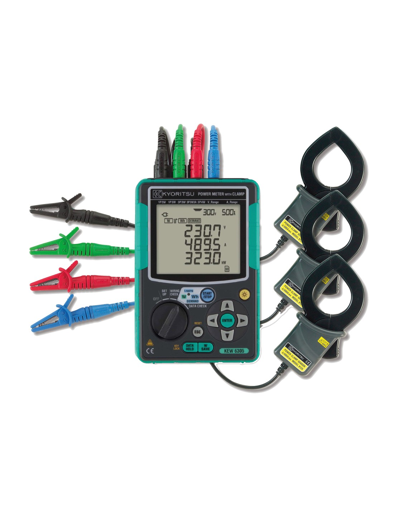

ANÁLISIS DE ARMÓNICOS
Ensayos y Mediciones
Para instalaciones baja tensión
En Metrelex realizamos los ensayos y mediciones necesarios con equipos de calidad para garantizar una medición confiable y segura.
PRUEBAS Y SERVICIOS
- Análisis de armónicos en sistemas eléctricos
- Medición de distorsión armónica total (THD)
- Diagnóstico y recomendaciones para mitigación de armónicos
- Verificación de la conformidad con estándares internacionales
NUESTROS EQUIPOS

MEDIDOR DE POTENCIA
MEDIDOR DE POTENCIA
MODELO KYORITSU 6305
- Monitoreo, registro y análisis completos en tiempo real de sistemas monofásicos y trifásicos
- Mediciones de voltaje, corriente, factor de potencia y frecuencia
- Análisis de potencia (potencia activa, aparente y reactiva)
- Análisis de energía (potencia activa, aparente y reactiva)
- Amplia selección de sensores de abrazadera que permiten mediciones de 0,1 A a 3000 A
- Mediciones remotas y en tiempo real usando la aplicación Android (Bluetooth)
MEDIDOR DE POTENCIA
MODELO KYORITSU 6300
- Monitoreo, registro y análisis completos en tiempo real de sistemas monofásicos y trifásicos
- Mediciones de voltaje, corriente, factor de potencia, frecuencia y demanda.
- Análisis de potencia (potencia activa, aparente y reactiva)
- Análisis de energía (potencia activa, aparente y reactiva)
- Amplia selección de sensores de abrazadera que permiten mediciones de 0,1 A a 3000 A x
Para más información sobre nuestros instrumentos, visita nuestra carta de presentación.